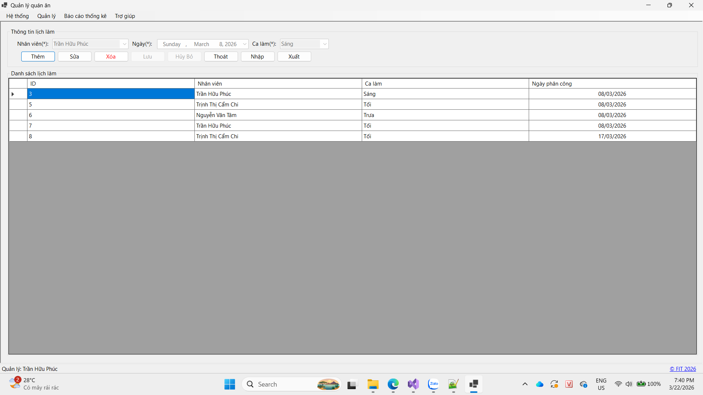

Hướng dẫn sử dụng màn hình lịch làm.

Bước 1: Tiến hành đăng nhập vào hệ thống.
Bước 2: Vào tab Quản lý, chọn mục lịch làm. Hệ thống sẽ hiển thị danh sách lịch làm lên màn hình.
Bước 1: Nhấn chọn chức năng thêm.
Bước 2: Nhập đầy đủ các trường thông tin.
Bước 3: Nhấn chọn Lưu, hệ thống sẽ cập nhật dữ liệu xuống danh sách lịch làm.
Bước 1: Nhấn chọn lịch làm cần được sửa thông tin.
Bước 2: Nhập đầy đủ các trường thông tin.
Bước 3: Nhấn chọn Lưu, hệ thống sẽ cập nhật dữ liệu xuống danh sách lịch làm.
Bước 1: Nhấn chọn lịch làm cần xóa.
Bước 2: Nhấn xóa và hệ thống sẽ hiển thị thông báo, nhấn OK để hoàn thành thao tác.
Bước 1: Chọn chức năng nhập.
Bước 2: Hệ thống sẽ hiển thị Dialog để chọn file excel cần nhập.
Bước 3: Nhấn chọn Open, hệ thống sẽ trả kết quả nhập được bao nhiêu dòng thành công/thất bại, đồng thời cập nhật kết quả vào danh sách lịch làm.
Bước 1: Chọn chức năng xuất.
Bước 2: Hệ thống sẽ hiển thị Dialog để chọn vị trí lưu file excel.
Bước 3: Nhấn chọn Open, hệ thống sẽ trả kết quả xuất file thành công/thất bại.